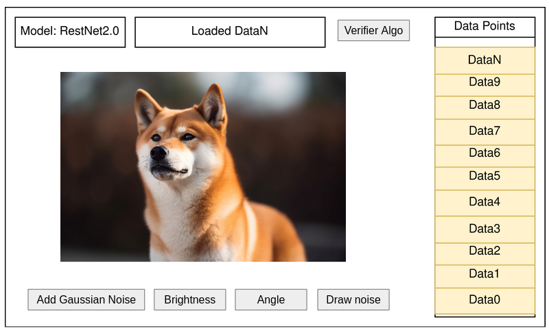
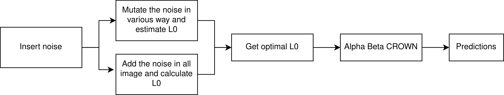

<2024-07-10 বুধ>
We first start by understanding "What is Neural Network Verification?". Testing is not enough to prove the robustness of a neural network. Due to the uncertain nature of whats inside blackbox, there can always be points for which the model would misclassify.
So we need to prove that a neural network would give certain output against certain input. More formally,
We need to prove that the NN satisfies the requirements.
Let us demonstrate it with a simple cat-dog classifier. We want to prove that for any input within region C, the model would classify cat. 
The current literature strongly focuses on adversarial robustness. So the robustness proving problem can be reduced to adding noise/perturbations to image and observing whether the model is robust against those perturbation. 
Here, the noise is defined as distance L0 norm between original image and perturbed image. The literature starts as early as 2017 and has recently gained popularity. 
We want to make a tool that will incorporate as many methods above as possible.
We will now discuss on auto-LiRPA first. It takes the following input.
| Epsilon | It indicates Perturbation level, calculated via L0 norm | e.g. 0.001 |
| testdata | One image or multiple image. | data/1.png |
| Model Architecture | Copy-paste model architecture | layer0 = keras.conv() |
And it produces the following output.
Bounding method: backward (CROWN, DeepPoly)
f_0(x_0): -5.638 <= f_0(x_0+delta) <= 0.521
f_1(x_0): -10.532 <= f_1(x_0+delta) <= -2.419
f_2(x_0): 1.883 <= f_2(x_0+delta) <= 7.537
f_3(x_0): -5.327 <= f_3(x_0+delta) <= -0.827
f_4(x_0): -7.217 <= f_4(x_0+delta) <= -1.037
f_5(x_0): -5.238 <= f_5(x_0+delta) <= -0.151
f_6(x_0): -5.686 <= f_6(x_0+delta) <= 0.118
f_7(x_0): -7.934 <= f_7(x_0+delta) <= -0.303
f_8(x_0): -12.044 <= f_8(x_0+delta) <= -3.793
f_9(x_0): -9.329 <= f_9(x_0+delta) <= -3.074
The output proves that for that perturbation, the output matches the actual value. So it is robust to that perturbation.
Collected from autoLiRPA Quick start tutorial http://PaperCode.cc/AutoLiRPA-Demo.
We want to make the following system. 
We will implement this the following way. 